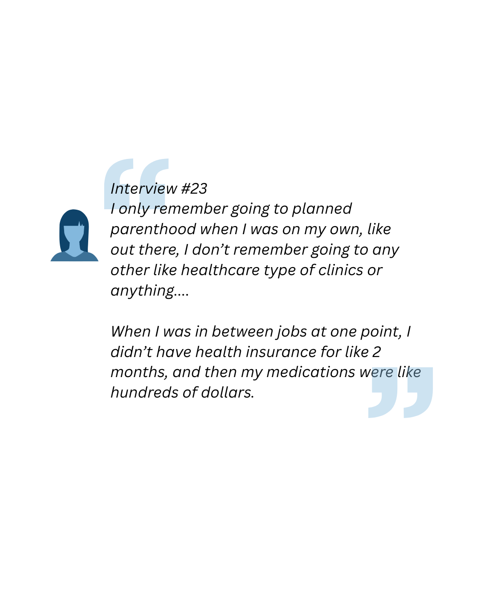

What are patterns of healthcare access and usage among youth who have experienced commercial sexual exploitation?
Young people who experience CSE or are at high risk of CSE victimization largely have connections to healthcare. Most survey respondents have insurance and feel they have somewhere they can rely on to meet their healthcare needs.
- 110% increase in healthcare utilization among youth with health insurance, especially those covered by parents
- 54% of youth who self-reported CSE visited the ER in the last year (vs. 30% non-reporting)
- 29% of self-reported CSE youth had inpatient admissions (vs. 9% non-reporting)
- 46% increase in healthcare utilization among self-reported CSE youth
- 50% higher healthcare use among LGBTQ-identifying youth
Youth experiencing CSE are more likely to seek healthcare, especially emergency or crisis care. Insurance coverage and LGBTQ identity are linked to increased utilization, while age and recruitment method showed no significant impact.

Healthcare Utilization
Over half reported seeing a therapist in the last year (54%) and a little less than half of the sample reported being prescribed psychiatric medicine (42%).
Source(s) of Data